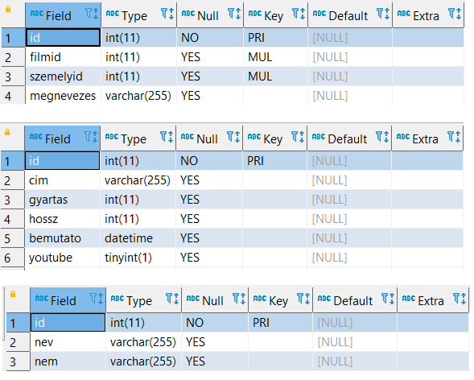

Film Database SQL Project
Relational MySQL project for analyzing films, actors, roles, and structured relationships across multiple connected tables.
Overview
This project focuses on a film-related relational database where multiple connected entities must be queried together. The dataset includes films, people, and role-based relationships, making it a strong example of structured SQL analysis beyond single-table querying.
The main value of this project lies in the use of relational thinking: instead of solving isolated filtering problems, the queries combine several tables to answer more realistic analytical questions.
Project Goal
The goal of the project was to model and query a small film database in MySQL, then answer increasingly complex business-style questions. This required understanding how entities relate to one another and how SQL joins can reconstruct meaningful information from normalized tables.
Relational Thinking
The project goes beyond one-table querying and focuses on how entities connect through keys and relationships.
Entity Connections
Films, people, and roles are stored separately and linked together through structured relations.
Analytical Queries
The tasks simulate realistic lookup and reporting scenarios often seen in content or media databases.
Database Structure
This project is especially useful as a portfolio example because it demonstrates a more realistic relational schema. Instead of storing everything in one table, the model separates core entities and connects them through keys.
Film Table → Person Table → Role / Relationship Table → JOIN Queries → Reports and Analysis

Database Schema: Following tables are used in the project.
Films
Stores the core movie records and title-related metadata.
People
Contains actors or other film-related persons participating in productions.
Relationships
Links films and people together through role-specific associations.
SQL Skills Demonstrated
JOIN Operations
- INNER JOIN
- Linking entities by keys
- Combining normalized tables
Filtering and Search
- WHERE clauses
- Conditional filtering
- Text-based selection
Aggregation
- COUNT
- GROUP BY
- Summary reporting
Reporting Logic
- Actor-film connections
- Grouped query outputs
- Readable result tables
Example Query Scenarios
The Hangos database project demonstrates practical SQL query writing on a historical film dataset. The selected examples show how relational SQL can be used for participant lookup, missing-data analysis, stored procedures, and reusable database functions.
1. Who worked on the same film as Heltai Jenő?
This query uses a subquery and multi-table joins to identify all people who contributed to the same film as Heltai Jenő. It is a good example of relational lookup across people, tasks, and films.
SELECT szemely.nev, film.cim
FROM feladat
JOIN szemely ON feladat.szemelyid = szemely.id
JOIN film ON film.id = feladat.filmid
WHERE cim = (
SELECT cim
FROM feladat
JOIN szemely ON feladat.szemelyid = szemely.id
JOIN film ON film.id = feladat.filmid
WHERE szemely.nev = "Heltai Jenő"
)
AND nev != "Heltai Jenő";
2. How many people have no recorded film-related data?
This query uses a LEFT JOIN to identify records that are missing from the relationship table. It demonstrates how SQL can be used for data validation and completeness checks.
SELECT COUNT(1)
FROM szemely
LEFT JOIN feladat ON feladat.szemelyid = szemely.id
WHERE feladat.filmid IS NULL;
3. Which films still have no related data recorded?
This query lists films that do not yet have linked task or participant records. It highlights missing relational data and is useful for database quality review.
SELECT cim
FROM film.*, feladat.*
LEFT JOIN feladat ON film.id = feladat.filmid
WHERE filmid IS NULL;
4. Stored procedure
This stored procedure returns all films connected to Karády Katalin, ordered by premiere date. It demonstrates how more complex query logic can be wrapped into a reusable database object.
DELIMITER $$
DROP PROCEDURE IF EXISTS Karady $$
CREATE PROCEDURE Karady()
BEGIN
SELECT *
FROM feladat
JOIN film ON film.id = feladat.filmid
JOIN szemely ON feladat.szemelyid = szemely.id
WHERE szemely.nev = "Karády Katalin"
ORDER BY bemutato;
END $$
DELIMITER ;
CALL Karady();
5. Stored function
This stored function returns how many films a given person appeared in or contributed to. It demonstrates reusable logic implemented directly inside the database layer.
DELIMITER $$
DROP FUNCTION IF EXISTS szemely_db $$
CREATE FUNCTION szemely_db(beNev VARCHAR(255))
RETURNS INT
BEGIN
DECLARE vissza INT;
SET vissza = (
SELECT COUNT(filmid), nev
FROM feladat
JOIN film ON film.id = feladat.filmid
JOIN szemely ON feladat.szemelyid = szemely.id
WHERE nev = beNev
);
RETURN vissza;
END $$
DELIMITER ;
SELECT szemely_db("Kabos Gyula");
Key Takeaways
- This project highlights relational SQL skills.
- JOIN logic is the central strength of the solution.
- The schema is closer to real-world database design.
- It is a strong portfolio example because it combines structure, logic, and readable reporting.